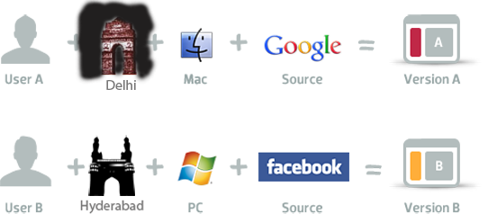
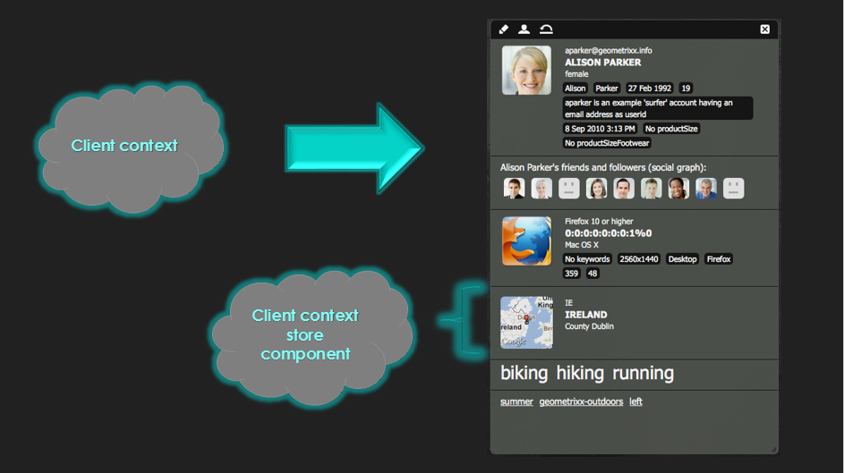

<!doctype html>
<html lang="en">

	<head>
		<meta charset="utf-8">

		<title>Content Personalization With AEM - AEM Users Group Kickoff Meetup</title>

		<meta name="description" content="Content Personalization With AEM - AEM Users Group Kickoff Meetup">
		<meta name="author" content="Ankit Gubrani">

		<meta name="apple-mobile-web-app-capable" content="yes" />
		<meta name="apple-mobile-web-app-status-bar-style" content="black-translucent" />

		<meta name="viewport" content="width=device-width, initial-scale=1.0, maximum-scale=1.0, user-scalable=no, minimal-ui">

		<link rel="stylesheet" href="css/reveal.css">
		<link rel="stylesheet" href="css/theme/ClientContextSession.css" id="theme">

		<!-- Code syntax highlighting -->
		<link rel="stylesheet" href="lib/css/zenburn.css">

		<!-- Printing and PDF exports -->
		<script>
			var link = document.createElement( 'link' );
			link.rel = 'stylesheet';
			link.type = 'text/css';
			link.href = window.location.search.match( /print-pdf/gi ) ? 'css/print/pdf.css' : 'css/print/paper.css';
			document.getElementsByTagName( 'head' )[0].appendChild( link );
		</script>

		<!--[if lt IE 9]>
		<script src="lib/js/html5shiv.js"></script>
		<![endif]-->
	</head>

	<body>

		<div class="reveal">

			<!-- Any section element inside of this container is displayed as a slide -->
			<div class="slides">
				<section>
                    
                    
					<h3>Content Personalization with AEM</h3>
                    <h4>AEM Users Group Kickoff Meeting</h4>
					
					<p>
						<small>Created by <a href="http://www.codebrains.co.in/ankitgubrani" target="_blank">Ankit Gubrani</a> / <a href="https://twitter.com/ankitgubrani90" target="_blank">@ankitgubrani90</a></small>
					</p>
				</section>

				<section>
					<h2>Agenda</h2>
					<ul>
                        <li>What is content personalization?</li>
                        <li>Client context</li>
                        <li>What are Segments?</li>
                        <li>Campaign Management</li>
                        <li>Experiences in AEM</li>
                        <li>Demo – Working with campaigns</li>
                    </ul>
				</section>

				<!-- Example of nested vertical slides -->
				<section>
					
						
                    <p style="text-align:justify;">.about-me{</p>
                            <p style="text-align:justify;margin-left: 100px;">name: Ankit Gubrani;<br>
                            title:	Sr. AEM Developer;<br>
                            working at: NextRow Pvt Ltd<br>
                            email-id: Ankit.gubrani90@gmail.com;<br>
                            linkedIn:	in.linkedin.com/in/ankitgubrani;<br>
                            twitter: @ankitgubrani90;<br>
                                blog: codebrains.blogspot.in;</p>
                            <p style="text-align:justify;">}</p>
						<br>
				</section>

				<section>
					<p>
						More than 500 different users visit amazon.com every day and each user gets a different version of home page.
                        <br>
                        <br>
                        <br>
                        
                        <b>But How?</b>
					</p>
				</section>

				<section>
					<p>
						Because its        
                        <br>
                        <br>
                        <b>Personalized !!!!...</b>
					</p>
				</section>

				<section>
					<h2>What is content personalization?</h2>
					<p>
						Content personalization in short means delivering the Right content to the Right Person at the Right Time.
					</p>
				</section>
				<section >
					<h2>How does it work ?</h2>
                    
				</section>

				
				<section>
					<h2>Key Elements of Personalization</h2>
					<ul>
                        <li class="fragment highlight-blue">Users / Lead – characteristics against which actual personalization is performed</li>
                        <li class="fragment highlight-blue">Content – content displayed or data of users interest</li>
                        <li class="fragment highlight-blue">Rule / Segments – definers how actually personalization is happening</li>
                    </ul>
				</section>
				

				<section id="transitions">
					<h2>Client Context</h2>
                    <ul>
                        <li class="fragment highlight-blue">mechanism to provide information about the visitor</li>
                        <li class="fragment highlight-blue">shows page information, visitors information, segments that are resolved, environment information such as IP address, browser etc.
</li>
                        <li class="fragment highlight-blue">consists of various session stores that contains user data
</li>
                    </ul>
					
				</section>

                <section>
                    <h2>Adding client context to a page</h2>
                    <ul>
                        <li class="fragment highlight-blue">include client context component in the body of the web page </li>     
                        <li class="fragment highlight-blue">/libs/cq/personalization/components/clientcontext</li>     
                        
                        <li class="fragment highlight-blue">Alt+Ctrl+C</li>
                        
                    </ul>
                    <pre><code class="hljs" data-trim contenteditable><cq:include path=“clientcontext” resourceType=“/libs/cq/personalization/components/clientcontext” /></code></pre>
                </section>
				<section id="themes">
					
					
				</section>                
                <section>
                    <h2>Client context store and components</h2>
                    <ul>
                        <li class="fragment highlight-blue">Session store – </li>                        
                            <ul>
                                <li class="fragment highlight-red">contains user data</li>
                                <li class="fragment highlight-red">2 types : Session store and persisted session store</li>
                            </ul>                        
                        <li class="fragment highlight-blue">Client context store component – </li>
                        <ul>
                            <li class="fragment highlight-red">displays data from client context store</li>
                        </ul>
                    </ul>
                </section>
                <section>
                    <h2>What are Segments?</h2>
                    <ul>
                        <li class="fragment highlight-blue">Visitors: person visiting website</li>
                        <li class="fragment highlight-blue">User: registered visitor</li>
                        <li class="fragment highlight-blue">Traits: characteristic of a visitor used to create segment, for eg- gender
</li>
                        <li class="fragment highlight-blue">Segment: collection of visitors that share certain traits, for eg- group of <b>males</b> under <b>30</b> living in <b>Hyderabad</b>
</li>
                    </ul>
                </section>
                <section>
                    <h2>Campaign Management</h2>
                    <ul>
                        <li class="fragment highlight-blue">provides a way to deliver personalized content in AEM
</li>
                        <li class="fragment highlight-blue">various elements of campaign management: </li>
                        <ul>
                            <li class="fragment highlight-red"><u><b>Brands</b></u> : Root level entity, consists of campaigns</li>
                            <li class="fragment highlight-red"><u><b>Campaigns</b></u> : how to market a brand, consists of experiences</li>
                            <li class="fragment highlight-red"><u><b>Experience</b></u> : what user see, can be a teaser or a news letter</li>
                        </ul>
                    </ul>
                </section>
				<section>
                    <h2>Experiences in AEM</h2>
                    <ul>
                        <li class="fragment highlight-blue"><b>Teasers</b> – pages that displays content focused on user’s interest
</li>
                        <li class="fragment highlight-blue"><b>Newsletters</b> – content sent to the users in the form of email
</li>
                    </ul>
                </section>
                <section >
            <h2>Thank You</h2>

            <div style="clear:both;">&nbsp;</div>
            <p style="font-size:26px;">
                Contact Us : <br>
                LinkedIn : <a href="http://in.linkedin.com/in/ankitgubrani">Ankit Gubrani</a> <br>
                Twitter : <a href="https://twitter.com/ankitgubrani90">@ankitgubrani90</a> <br>
                Email-ID : <a href="ankit.gubrani90@gmail.com">ankit.gubrani90@gmail.com</a> <br>
                Blog : <a href="http://codebrains.blogspot.in/">codebrains.blogspot.in</a> <br>
            </p>
        </section>

        <section>
            <h1>THE END</h1>

            <div style="clear:both;">&nbsp;</div>
            <h5>BY Ankit Gubrani</h5>
        </section>
			</div>

		</div>

		<script src="lib/js/head.min.js"></script>
		<script src="js/reveal.js"></script>

		<script>

			Reveal.initialize({
				controls: true,
				progress: true,
				history: true,
				center: true,

				transition: 'fade', // none/fade/slide/convex/concave/zoom
                
				dependencies: [
					{ src: 'lib/js/classList.js', condition: function() { return !document.body.classList; } },
					{ src: 'plugin/markdown/marked.js', condition: function() { return !!document.querySelector( '[data-markdown]' ); } },
					{ src: 'plugin/markdown/markdown.js', condition: function() { return !!document.querySelector( '[data-markdown]' ); } },
					{ src: 'plugin/highlight/highlight.js', async: true, condition: function() { return !!document.querySelector( 'pre code' ); }, callback: function() { hljs.initHighlightingOnLoad(); } },
					{ src: 'plugin/zoom-js/zoom.js', async: true },
					{ src: 'plugin/notes/notes.js', async: true }
				]
			});

		</script>

	</body>
</html>
